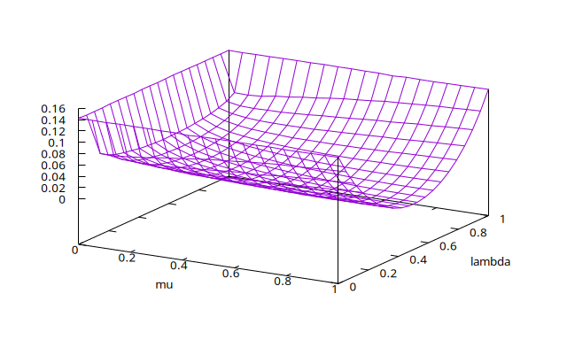
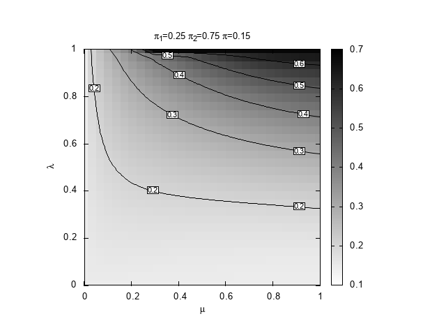
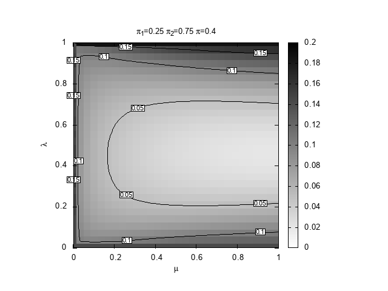
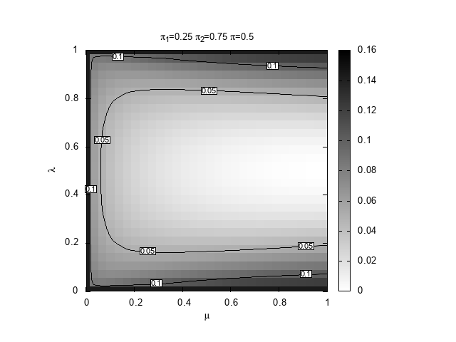

Monte Carlo analysis of a learning model
Table of Contents
Introduction
These short notes are intended to illustrate an example of Monte Carlo analysis of a model whose evolution is not directly mathematically tractable. In the paper "Pricing anomalies in a general equilibrium model with biased learning" a family of learning algorithms is considered. The algorithm aims to learn the probability of the next occurrence of a binary model \(s_t \in \{0,1\}\), considering the convex combination of two Markov chains \[ M_h = \begin{pmatrix} \pi_h & 1-\pi_h \\ 1-\pi_h & \pi_h \\ \end{pmatrix} \quad h =1, 2, \] where \(\pi_h\) is the probability of remaining in the present state and \(1-\pi_h\) is the probability of switching to the other. If the algorithm places a weight \(w\) on the first chain and \(1-w\) on the second, the prediction is that with probability \(p(w)=w \pi_1+(1-w) \pi_2\) the last state that occurred will be realized again, while the other state will be realized with probability \(1-p(w)=w (1-\pi_1)+(1-w) (1-\pi_2)\).
The algorithm starts with an initial weight \(w_0\) assigned to the first model, and at each new realization this weight is updated, based on the previous realization, using the formula
\[ w_{t} = \lambda \mu + (1-\mu) w_{t-1} \begin{cases} \pi_1/p(w_{t-1}) & \text{if } s_t=s_{t-1} \\ (1-\pi_1)/(1-p(w_{t-1})) & \text{if } s_t \neq s_{t-1} \end{cases}, \quad \mu,\lambda \in [0,1]. \]
With \(\mu=0\), this corresponds to a Bayesian learning. When \(\mu> 0\), the update is weaker than with the Bayes rule, and an anchoring mechanism, parameterized by \(\lambda\), is introduced to represent exogenous preferences for one model over the other.
Assume that the sequence of states \((s_t)\) is a Bernoulli process, so that at each step \(t\), irrespective of previous realizations, \(s_t=0\) with probability \(\pi\) and \(s_t=1\) with probability \(1-\pi\). In this process, the learning model above is misspecified as, in general, the true process does not belong to the set of processes that the algorithm can perfectly describe. We are interested in investigating the performance of the algorithm in this setting.
Kullback–Leibler divergence
To measure the agreement between the algorithm and the underlying true process, we consider their relative entropy, or Kullback–Leibler divergence. The expression of the divergence in terms of the probability \(p\) assigned to observe the same outcome as the last realization reads
\[ D(p)=\pi^2\log\frac{\pi}{p}+\pi(1-\pi)\log\frac{\pi(1-\pi)}{(1-p)^2}+(1-\pi)^2\log\frac{1-\pi}{p}. \]
An analytic expression for the weight distribution \(w\) is not normally known, so we do not fully understand how \(D\) depends on the value of the learning parameters \((\mu,\lambda,\pi_1,\pi_2)\) and the true model \(\pi\). We explore it with a Monte Carlo approach.
Monte Carlo setting
Fixing the parameters of the learning model, we consider \(n\) possible initial weights \(w_0(i)\), \(i=1,\ldots,n\), and evolve each weight using the equation above, over \(n\) independent realizations of the Bernoulli process, obtaining \(n\) sequences \((w_t(i))\). In these sequences, we want to compute
\[ \bar{D}_i(T) = \frac{1}{T} \sum_{t=1}^T D(p_t(i)), \quad p_t(i) = w_t(i) \pi_1+(1-w_t(i)) \pi_2. \]
We can expect that these numbers become progressively similar as the effect of the initial condition disappears. However, we do not know how long \(T\) must be. The approach we follow is to initially evolve the weights simulating \(T = \delta T\) steps. We then consider the average and standard deviation of the divergence values obtained,
\[ m_T = \frac{1}{n} \sum_{i=1}^n \bar{D}_i(\delta T),\quad \sigma^2_T = \frac{1}{n-1} \sum_{i=1}^n (\bar{D}_i(\delta T)-m_T)^2. \]
If \(\sigma_T < \alpha\) and \(\sigma_T/m_T < \epsilon\), where \(\alpha,\epsilon>0\) are preset thresholds (note that \(m_T>0\)), the simulation stops, having reached the desired absolute and relative precision. Otherwise, the simulation of each independent replica runs for another \(\delta T\) steps and the KL average and standard error are updated. The comparison and extension procedure is repeated until the thresholds are met.
The program
The procedure described in the previous section is implemented in the
program DKLmc. It can be run from a console specifying all the
parameters on the command line. Let's review the help message
>./DKLmc -h
Monte Carlo computation of the average Kullback–Leibler divergence (DKL)
of a behavioral learning algorithm. If a comma separated range is provided
for mu or lambda, a tabular output is produced with equally spaced
values in that range.
Usage: ./DKLmc [options]
Options:
-m set mu (default 0.5)
-l set lambda (default 0.5)
-1 set pi1 (default 0.25)
-2 set pi2 (default 0.75)
-t set pi (default 0.5)
-a set the maximum absolute error (default 1e-3)
-e set the maximum relative error (default 1e-2)
-T set the maximum number of steps of the simulation (default 1e6)
-d set the steps increment (default 100)
-n set the number of initial weights (default 8)
-g set the number of grid points for tabular output (default 10)
with two comma separated values, set the grid point for mu and lambda
-V verbosity level (default 0)
0 only warnings
1 print the values of model parameters
2 print the values of Monte Carlo parameters
3 print intermediate DKL estimate and error at each step
-h print this message
>
Note that the parameters \(\mu\) and \(\lambda\) are a bit special. If a range of values is specified for them, the program prints a table with a list of values for the different combinations of parameters. Thus, for instance,
>./DKLmc -l 0,1 -m 0,1 -g 4 # mu lambda DKL avg 0.000000e+00 0.000000e+00 1.428616e-01 0.000000e+00 3.333333e-01 1.415857e-01 0.000000e+00 6.666667e-01 1.417891e-01 0.000000e+00 1.000000e+00 1.417545e-01 3.333333e-01 0.000000e+00 1.423654e-01 3.333333e-01 3.333333e-01 2.331129e-02 3.333333e-01 6.666667e-01 2.334392e-02 3.333333e-01 1.000000e+00 1.422726e-01 6.666667e-01 0.000000e+00 1.411436e-01 6.666667e-01 3.333333e-01 1.471094e-02 6.666667e-01 6.666667e-01 1.468875e-02 6.666667e-01 1.000000e+00 1.410062e-01 1.000000e+00 0.000000e+00 1.427470e-01 1.000000e+00 3.333333e-01 1.415329e-02 1.000000e+00 6.666667e-01 1.415329e-02 1.000000e+00 1.000000e+00 1.427470e-01
The option -v controls the level of verbosity. With the options
-a, -e, and -T one can set the absolute precision, the relative
precision, and the maximum number of steps, respectively. In any case,
the precision is not checked before running \(\delta T\) steps. To
simulate for a fixed number of time steps, set the desired value with
the parameter -d and select a large absolute and relative
tolerance. The option -n sets the number of independent replica. As
th program is parallelized, it is probably a good idea to set it to a
multiple of the available parallel threads.
The output format is suitable to be sent to gnuplot for
plotting. Using the gbplot utility of the gbutils package the
result can be directly displayed on the desktop. The command
>./DKLmc -l 0,1 -m 0,1 -g 20 | gbplot -C 'set xlabel "mu"; set ylabel "lambda"' splot with line
produces the following plot

Requirements
To be installed from source, the program requires a C compiler, the standard C library and a recent version of the GNU Scientific Library (GSL) (version >= 1.6) and of the OpenMP library. These libraries are all available in the package management tool of any major Linux distribution.
Installation instructions
On linux, compile the program using gcc with
gcc DKLmc.c -lm -lgsl -lgslcblas -march=native -O3 -fopenmp -o DKLmc
On Windows, you can use the Windows Subsystem for Linux (WSL) or try
to install it natively if you have access to a compiler and the
necessary libraries.
Download
You just need the source code DKLmc.c (ver. 0.2). Follow the installation instructions.
Example
We are interested to discover which region of the space \((\mu,\lambda))\) provides the best prediction, in terms of relative entropy, given \((\pi_1,\pi_2,\pi)\). For definiteness, we set \(\pi_1=0.25\) and \(\pi_2=0.75\) and explore three values for the true probability, \(\pi=0.15,0.4,0.5\). The case \(0.5\) is special because it is the only situation in which our learning algorithm can actually learn the true Bernoulli model that generates the space.
We can use a Bash script to drive the computation by DKLmc and the
plotting process with gnuplot.
#!/bin/bash # Copyright (C) 2025 Giulio Bottazzi # created: 2025-03-19 for pi in 15 4 5; do echo "$pi" ./DKLmc -1 0.25 -2 0.75 -t 0.${pi} -l 0,1 -m 0,1 -g 30 -a 1e-4 -e 1e-3 > mu-lambda_025_075_0${pi}.txt gnuplot << EOF set term png enhanced font "Arial,10" set out "mu-lambda_025_075_0${pi}.png" reset # shape and title set encoding utf8 set size square set title "{/StandardSymbolsPS p}_1=0.25 {/StandardSymbolsPS p}_2=0.75 {/StandardSymbolsPS p}=0.${pi}" set xlabel "{/StandardSymbolsPS m}" set ylabel "{/StandardSymbolsPS l}" # parameters for the heat map set view map unset surface set palette defined (0 "white", 1 "black") # parameters for the contours set contours base set cntrparam levels auto 6 set cntrparam bspline set cntrparam order 6 # parameters for the labels of the contours set cntrlabel font "Arial,8" set cntrlabel onecolor set cntrlabel start 5 interval 120 set style textbox opaque fc "white" splot "mu-lambda_025_075_0${pi}.txt" with image notitle, "" w l lt -1 dt 2 notitle, "" with labels font "Arial,6" boxed notitle EOF done
Note the use of the Here Dcouments syntax to create on-the-fly the
code that gnuplot executes. The tree obtained plots are reported
below.


